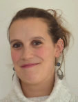
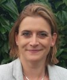
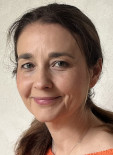

Lisa De Noose, directrice du
centre ALPHA
GSM : +32 (0)477 61 11 52
Licenciée et docteur en psychologie, formée en
psychothérapie d'orientation analytique et systémique, Lisa De Noose assure des consultations auprès d'enfants,
adolescents, adultes et familles. Chargée de cours à l'Université de Mons, Lisa De Noose y assure l'enseignement
des méthodes projectives et organise par ailleurs de nombreuses formations et supervisions à destination des
professionnels de la santé mentale.
Madison Bruyninckx
GSM
: +32 (0)498 02 53 25
Dotée d'un Master en psychologie clinique, Madison Bruyninckx reçoit les enfants et
les adolescents en consultation. Elle prend en charge les difficultés de gestion des émotions, l'anxiété ou la
dépression.
Wendy Carliez
GSM :
+32 (0)498 29 85 75
Titulaire d'un master en psychologie clinique et formée en psychothérapie
émotivo-cognitivo-comportementale, Wendy Carliez propose des consultations individuelles pour enfants,
adolescents et jeunes adultes. Elle se spécialise particulièrement dans la prise en charge des troubles anxieux
et réalise également des bilans cognitifs et psychoaffectifs.
Camille Chapelle
GSM
:
+32 (0)494 52 16 24
Titulaire d'un master en psychologie clinique et psychopathologie, Camille Chapelle
bénéficie d'une expérience en service de santé mentale, en unité parents-bébé, en pouponnière et en service
résidentiel pour jeunes (SRJ) présentant des troubles sévères du comportement. Elle assure au sein du Centre
Alpha des consultations pour les jeunes enfants (0-3 ans), les enfants et les adolescents et mène des bilans
diagnostiques intellectuels et psychoaffectifs. De plus, elle se forme actuellement à la psychothérapie
psychanalytique et aux interventions cliniques.
Naomi Cheverton
GSM
: +32 (0)470 09 76 73
Titulaire d'un master en psychologie, Naomi Cheverton se forme par ailleurs en
thérapie brève et intégrative. Elle assure des consultations à visée diagnostique et du soutien psychologique
tant pour les enfants que les adolescents et les adultes. De plus, elle suit actuellement une formation de 3°
cycle en psychothérapie émotivo-cognitivo-comportementale.
 Stéphanie Coolen
Stéphanie Coolen
GSM
: +32 (0)472 60 69 33
Détentrice d’un Master en sciences psychologiques (enfant/adolescent), Stéphanie
Coolen est spécialisée dans le développement psychologique et les approches sur le traumatisme. Elle est, entre
autre, formée à la Somatic Experiencing et au Modèle Relationnel Neuro-Affectif. Elle a une expérience
professionnelle avec l'autisme, le haut potentiel et dans un Service Résidentiel pour Jeunes avec des
problématiques de type caractériel.
Justine Hanot
GSM :
+32 (0)485 40 82 89
Licenciée en psychologie et diplômée en psychothérapie systémique, Justine Hanot prend
en charge tant les familles et les couples en difficulté que les adolescents et adultes en individuel. Par
ailleurs, elle dispose d'une formation qui lui permet d'accompagner les personnes confrontées à un burn-out
parental.
Louise Hocquet
GSM
: +32 (0)492 55 76 69
Titulaire d’un master en psychologie clinique, Louise Hocquet se spécialise en
psychothérapie systémique. Elle accompagne enfants, adolescents, adultes et familles en proposant des suivis
thérapeutiques centrés sur les dynamiques relationnelles et familiales.
Delphine Kallai
GSM
: +32 (0)471 35 21 67
Psychologue et psychothérapeute d'orientation analytique et rogérienne, Delphine
Kallai assure des consultations individuelles avec des enfants, adolescents et adultes. Au sein du Centre Alpha,
elle propose des bilans psycho-affectifs et des suivis psychothérapeutiques sur base de la thérapie par le jeu
de sable.
Caroline Laurent
GSM
: +32 (0)475 67 66 14
Titulaire d'une licence en psychologie, Caroline Laurent est spécialisée en
psychothérapie d'orientation analytique et prend en charge tant les enfants, que les adolescents et les adultes.
Elle mène également des bilans diagnostiques sur le plan intellectuel et psycho-affectif.
Marie-Christine
Laurent
GSM : +32 (0)496 29 84 54
Psychologue et psychothérapeute d'orientation analytique,
Marie-Christine Laurent assure des consultations avec les enfants, adolescents et adultes et ce, tant à des fins
diagnostiques qu'à visée psychothérapeutique. Elle bénéficie également d'une expertise dans le champ autistique.
Jean-Luc Pirard
GSM
: +32 (0)495 36 47 60
Licencié en communication sociale, Jean-Luc Pirard est formé en coaching
professionnel. A ce titre, il assure des bilans de compétences, et oriente tant au niveau scolaire que
socio-professionnel. Il accompagne également les personnes (pré)pensionnées dans leur bilan de carrière et la
redéfinition de nouveaux projets.
Sarah Theunissen
GSM
: +32 (0)495 89 72 06
Détentrice d’un Master en psychologie et en sexologie clinique, Sarah Theunissen
accueille les adolescents, les adultes et les seniors, en individuel ou en couple. Elle propose également des
séances d’hypnose. Ses domaines d’expertise tournent autour des difficultés relationnelles et sexuelles, des
traumatismes et d’estime de soi. Les valeurs de bienveillance, de respect et d’inclusion lui sont
particulièrement chères, ses consultations sont une safe place (LGBTQIA+ friendly).
Yliona
Vandenbergen
GSM : +32 (0)494 28 11 05
Titulaire d’un Master en psychologie clinique et
psychodynamique de l’enfant et de l’adolescent, Yliona Vandenbergen se forme actuellement à la thérapie
analytique. Elle assure la prise en charge des enfants et des adolescents et accompagne les futurs et/ou jeunes
parents dans leur processus de parentalité dès les premiers mois de vie. Elle propose également des bilans
intellectuels et psycho-affectifs.
Céline Vilaine
GSM
: +32 (0)479 17 43 02
Titulaire d’un master en psychologie et d’une licence en sciences de la famille et de
la sexualité, Céline Vilaine accueille les enfants, les adolescents et et leur(s) parent(s). Elle assure un
accompagnement de l'enfant/adolescent en difficulté dans la gestion de ses émotions, de son comportement ou dans
sa relation aux autres. Elle travaille en collaboration avec les parents et leur propose un soutien à la
parentalité. Elle se spécialise actuellement dans l’accompagnement relationnel entre les parents et le jeune
enfant (dès 1 an) selon les principes du Theraplay.